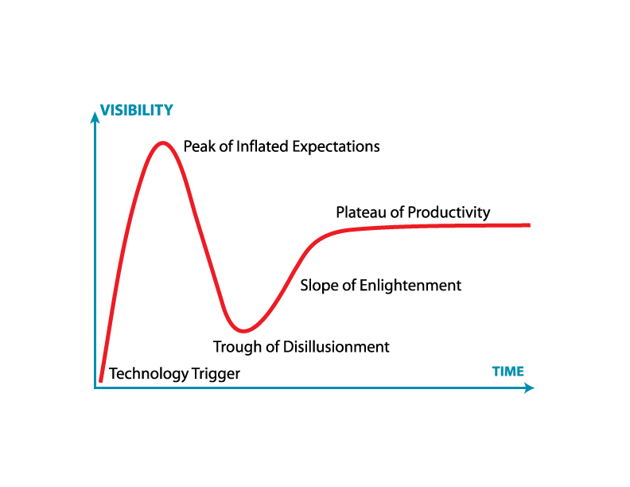

We tend to overestimate the effect of a technology in the short run and underestimate the effect in the long run.

https://en.wikipedia.org/wiki/Hype_cycle
[](http://www.cbs46.com/story/38197149/amazons-alexa-becomes-resource-for-johns-creek)
- 📃 background
- 👋 hello world bot
- 💬 deploy to slack
- ⌨️ jSTL bot
- 📲 SMS (twilio)
- 🐞 how to debug
- 💡 advanced calls
# Thank you!
- [gavinr.com](https://gavinr.com)
- [twitter.com/gavinr](https://twitter.com/gavinr)
- [github.com/gavinr/presentations](https://github.com/gavinr/presentations)
# Sources
- https://www.claudiajs.com/
- https://medium.freecodecamp.org/express-js-and-aws-lambda-a-serverless-love-story-7c77ba0eaa35